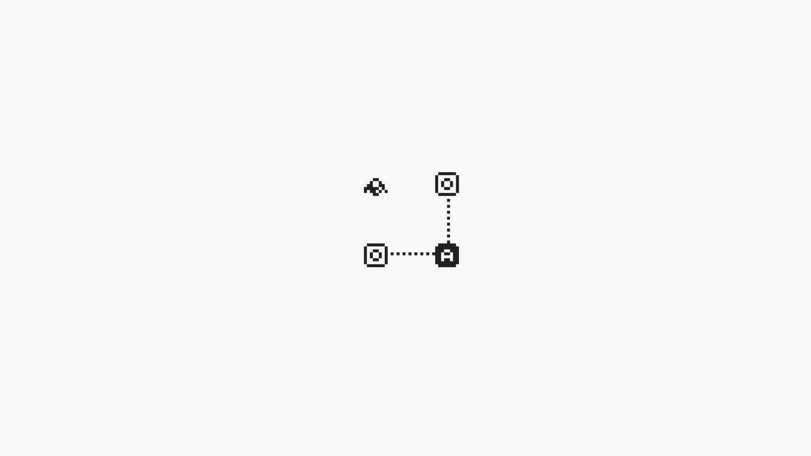
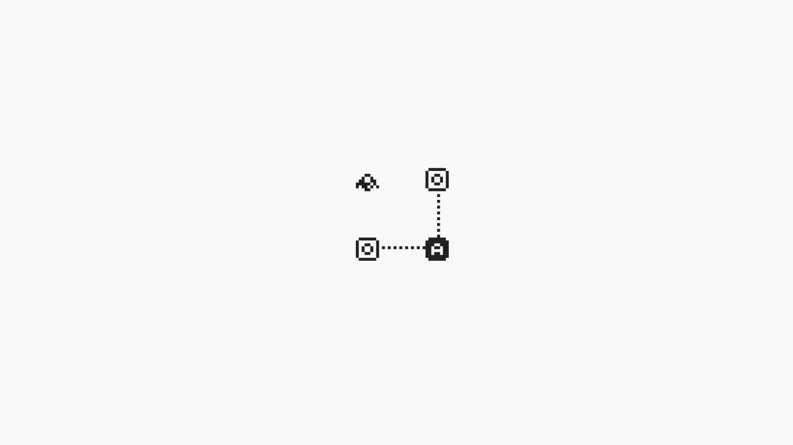

Q1417–Q1417 · 3.60 h · 3.60 VI
Porte was an experimental Bitsy game where you play as a robot unlocking portals by solving very simple logic gate puzzles.
Porte was an experimental Bitsy game where you play as a robot unlocking portals by solving very simple logic gate puzzles.
